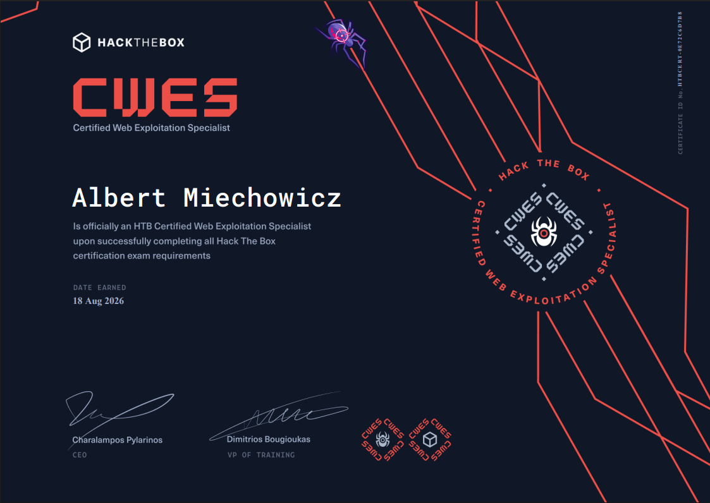

Pod koniec wakacji postanowiłem przystąpić do egzaminu na certyfikat CWES (Certified Web Exploitation Specialist) od Hack The Box. Był to przełomowy krok w mojej dotychczasowej nauce, ponieważ to mój pierwszy certyfikat bezpośrednio z platformy HTB oraz pierwszy "poważniejszy" jaki robiłem który wymagał raportu.
Z tego miejsca chciałem złożyć ogromne podziękowania w stronę Michała Błaszczaka, szerzej znanego pod pseudonimem Miblak. To właśnie dzięki niemu mogłem przystąpić oraz zdać ten certyfikat. Dziękuję mu także za umożliwienie mi korzystania z platformy Hack The Box Enterprise. To właśnie na niej spędziłem praktycznie całe moje wakacje, ponieważ dostęp miałem tam tylko na okres wakacyjny – trzeba było wycisnąć z tego 100%. Jeszcze raz bardzo dziękuję!
Sam egzamin zdecydowanie nie należał do najprostszych. Zdobycie flag zajęło mi mniej więcej 17 godzin, które rozbiło się na 3 dni. Niejednokrotnie musiałem zatrzymać się i przemyśleć mój kolejny krok, ponieważ natrafiałem na "ścianę", której na pierwszy rzut oka nie mogłem przeskoczyć.
Przygotowanie i Środowisko
Do egzaminu podszedłem klasycznie. Korzystałem z wirtualnej maszyny z Kali Linuxem oraz z obszernej bazy notatek, które gromadziłem przez całą moją naukę na ścieżkach Hack The Box. Jeśli chodzi o narzędzia, które najczęściej używałem, to były to przede wszystkim:
- Burp Suite
- FFuF
- Gobuster
- SQLmap
- Wappalyzer
Enumeracja to 90% sukcesu na tym egzaminie. Jeśli wydaje ci się, że w aplikacji nie ma luki, to znaczy, że po prostu za słabo fuzzałeś albo coś przeoczyłeś w source code. Dodatkowo polecam mądrze używać AI do szybkiego researchu składni payloadów oraz przede wszystkim – korzystać z własnych notatek z modułów HTB.
Ogólny opis egzaminu
Środowisko egzaminacyjne składało się z 5 niezależnych aplikacji webowych. W każdej z nich scenariusz był podobny: najpierw musieliśmy zdobyć konto uprzywilejowanej osoby (najczęściej Admina), a następnie po zdobyciu dostępu wykorzystać te uprawnienia do wykonania kodu (RCE) i zdobycia flagi prosto z serwera. Łącznie wszystkich flag było 10, a do zdania wymagane było zdobycie minimum 80 punktów oraz dostarczenie profesjonalnie napisanego raportu z przeprowadzonych testów. Mi udało się zebrać 9 na 10 flag, z czego jestem bardzo dumny.
Nie mogę niestety zdradzić technicznych detali odnośnie samych aplikacji, ale mogę powiedzieć, że niektóre wektory ataku były w gruncie rzeczy "proste", a rozwiązanie przychodziło z czasem. Człowiek po prostu po kilku godzinach uświadamiał sobie, że przekombinował i próbował robić więcej niż wymagali, podczas gdy ścieżka była znacznie łatwiejsza.
Niejednokrotnie zdarzało mi się odchodzić od kompa, żeby zrobić sobie krótki spacer, pójść po wodę lub po prostu odpocząć. Ciągłe siedzenie przy kompie prawdopodobnie doprowadziłoby mnie do szału i zablokowało logiczne myślenie. Zmiana kontekstu naprawdę działa – często najlepsze pomysły wpadały mi do głowy z dala od klawiatury. Nie forsujcie się, jeśli nie jesteście w stanie znaleźć rozwiązania przez dłuższy czas.
Rady od Albercika
Oto moje rady, które moim zdaniem mogą wam uratować życie podczas podejścia do tego certyfikatu:
- Przerób sumiennie materiał: Ukończ w 100% ścieżkę Web Penetration Tester na HTB i bądź pewny, że ogarniasz wszystkie podatności. Nie idź na skróty.
- Notuj wszystko: Rób porządne notatki i zapisuj komendy! To bardzo ważne, ponieważ czasami nawet drobna rzecz, którą uznałeś za nudną i niepotrzebną podczas robienia modułów, nagle staje się jedyną drogą do flagi na egzaminie.
- Rób screenshoty na bieżąco: Nie ma nic gorszego niż zdobycie flagi i uświadomienie sobie przy pisaniu raportu, że brakuje ci dowodu kroków. Rób screeny z każdego kroku który będzie musiał być potem opisany w raporcie.
- Nie przejmuj się czasem: Upewnij się, że masz wolny tydzień, aby przysiąść do tego porządnie i nie przejmować się godzinami. Masz całe 7 dni na zdobycie flag oraz raport. Osobiście polecam poświęcić 2-3 pierwsze dni na maksa, aby zdobyć wymagane flagi, a następnie na chłodno napisać raport kiedy ci wygodnie.
- Narzędzia do raportowania: Zadbaj o dobry oraz spójny raport. Wygląd i profesjonalizm mają znaczenie. Od siebie mocno polecam skorzystać z narzędzia SysReptor z wgranym szablonem stworzonym typowo pod CWES. Ułatwia to bardzo robotę
Podsumowanie
Egzamin CWES to niesamowite wyzwanie, które bardzo dobrze weryfikuje realne umiejętności ataku na aplikacje webowe. Było to dla mnie super doświadczenie, świetny sprawdzian wiedzy i każdemu, kto celuje w web security, szczerze polecam spróbować swoich sił.
Jeśli macie jakieś pytania odnośnie materiałów przygotowawczych, chcecie pogadać o podejściu do nauki albo po prostu pogadać – łapcie mnie na serwerze Discord NTHW!